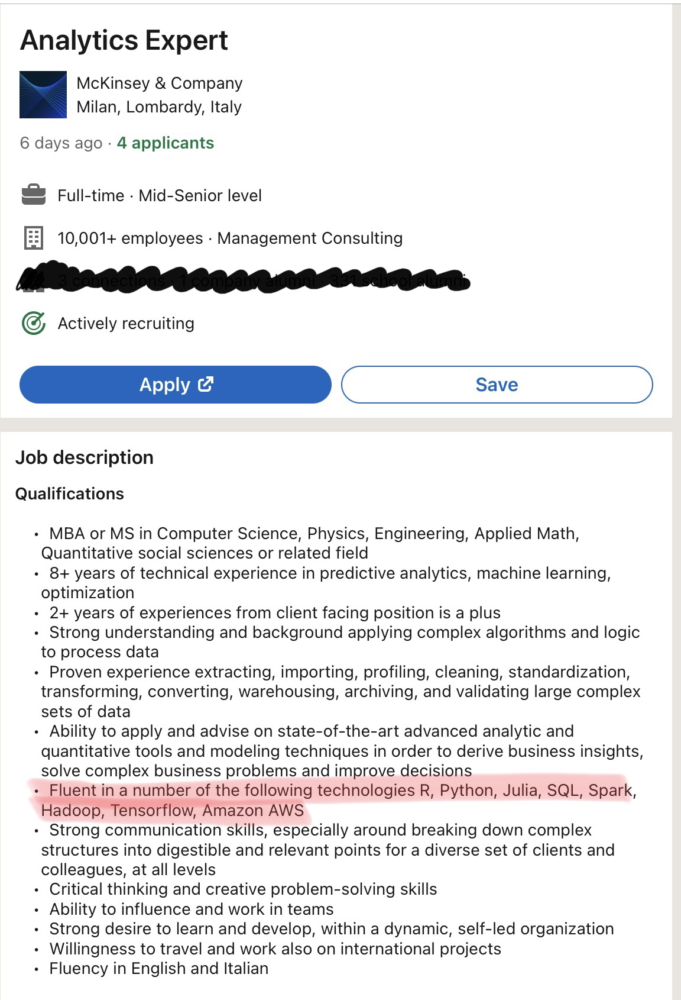
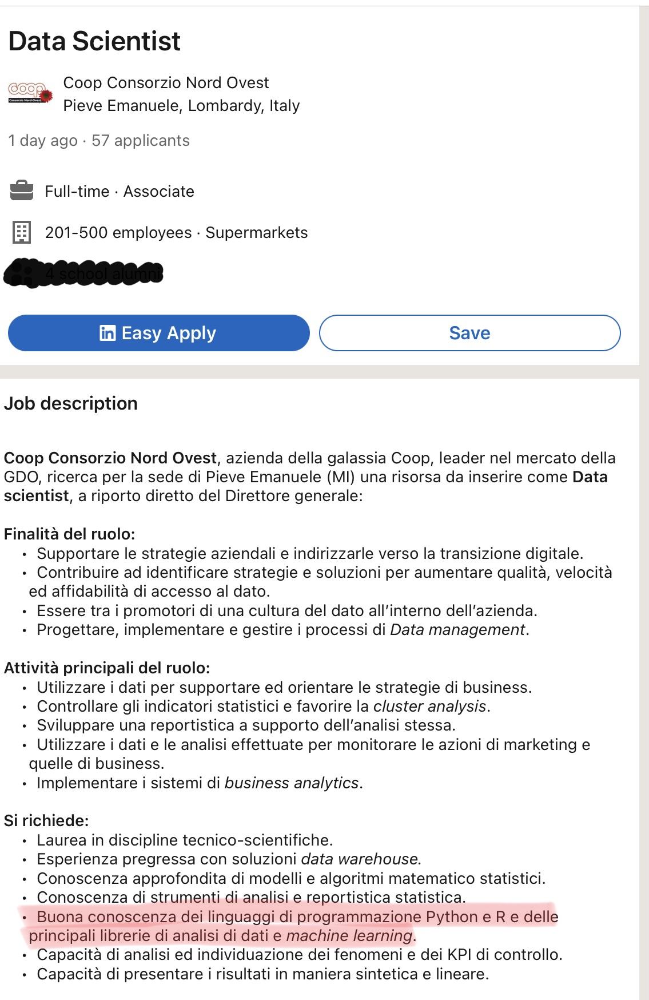

R per l’analisi statistica multivariata
Introduzione al corso
ASM
L’analisi statistica multivariata riguarda l’analisi congiunta di più variabili misurate sul medesimo insieme di unità statistiche.
Nei corsi precedenti (ad es. Statistica I), ci si è concentrati su una o due variabili alla volta. In contesti reali le variabili coinvolte sono quasi sempre ben più di 2.
Il modulo AE è la naturale prosecuzione di un corso di statistica descrittiva, applicato al caso in cui le variabili sono più di 2.
Il modulo MS estende e analizza nel dettaglio il modello lineare, nel caso in cui le variabili esplicative sono molte.
Le tecniche per l’analisi di dati multivariati possono avere una natura descrittiva / esplorativa (AE) oppure inferenziale (MS).
Organizzazione del corso
Pagina e-learning: https://elearning.unimib.it/enrol/index.php?id=37030
Pagina web di ASM-R: https://tommasorigon.github.io/introR/
Nella pagina web del corso potete trovare:
- Ultimi avvisi
- Materiale didattico da scaricare (slide, esercizi, etc.)
- Modalità d’esame
- Propedeuticità, regole del salto d’appello
- Altro
Tutor: Luca Danese (l.danese1@campus.unimib.it).
Propedeuticità
Questa attività formativa deve essere preceduta dal superamento e registrazione dei seguenti esami:
- Algebra lineare;
- Analisi Matematica I;
- Calcolo delle Probabilità;
- Statistica I.
Non è possibile iscriversi alla prove parziali di R, AE, MS, senza aver prima registrato le attività formative sopra elencate.
È tuttavia sempre possibile frequentare le lezioni.
Registrazione del voto
Il voto finale di ASM è determinato dalla media (ponderata con i rispettivi CFU) dei voti conseguiti nelle tre parti R, AE e MS (arrotondato all’intero più vicino).
Per poter registrare il voto di ASM, è necessario aver conseguito un voto sufficiente (\(\ge 18\)) nelle prove di R, AE e MS ma anche iscriversi all’appello di ASM.
Quindi per registrare l’esame è necessario iscriversi all’appello di ASM (15 CFU) ai fini della verbalizzazione.
Salto d’appello
In ottemperanza al Regolamento Didattico di Ateneo, per l’insegnamento ASM è previsto il salto d’appello.
Per motivi didattici, agli studenti i quali nel primo appello della sessione Invernale ed Estiva consegnano un compito scritto, chiedendone la correzione, che palesa lacune tali da essere considerate non colmabili nel tempo che intercorre tra l’appello in questione ed il successivo, ovvero una votazione inferiore a 9/30.
Per motivi disciplinari, agli studenti che durante gli esami scritti vengano sorpresi a copiare, a scambiare informazioni coi compagni, a riversare sull’elaborato informazioni provenienti da qualsiasi supporto di cui non è permesso l’utilizzo.
Per motivi organizzativi, agli studenti che si iscrivono ripetutamente (3 volte consecutive) agli appelli senza presentarsi, senza effettuare la disiscrizione o avvisare per mail con adeguata motivazione per l’assenza.
ASM-R
Il modulo R è in larga misura una revisione di argomenti che dovreste già conoscere bene. Nello specifico, ci occuperemo di
- Statistica descrittiva (Statistica I);
- Calcolo delle probabilità;
- Inferenza statistica (Statistica II).
Al tempo stesso, il modulo R è un esame di programmazione in R.
Nota
ASM-R non è una “introduzione” al software R. Lo scopo del corso è mostrare come risolvere problemi statistici reali disponendo di un computer.
In altre parole, all’esame verranno valutati sia la forma (programmazione) che il contenuto (analisi statistica).
Programma dettagliato
Il corso ASM-R è costituito da \(4\) macro-argomenti.
Introduzione ad R
Concetti di base, elementi di programmazione, vettori, matrici, dataframes, funzioni.
Statistica descrittiva
Revisione degli argomenti di Statistica I usando R. Analisi descrittiva di un dataset.
Calcolo delle probabilità
Variabili aleatorie, numeri pseudo-casuali, applicazioni del metodo Monte Carlo.
Inferenza statistica
- Metodi numerici per l’analisi di verosimiglianza.
- Metodi Monte Carlo per il calcolo delle proprietà di uno stimatore (distorsione, varianza, consistenza).
R software
Il software R è contemporaneamente un linguaggio di programmazione ed un software per l’analisi dei dati.
È distribuito gratuitamente dal gruppo The R Project for Statistical Computing (http://www.r-project.org).
Un gruppo di ricercatori, l’R Core Team, costituito oggi da circa 20 membri, si occupa dei codici sorgente.
Il software R è in continua evoluzione: dalla versione 0.64 si è giunti ad oggi (Novembre 2022) allo sviluppo della versione 4.2.2 (Innocent and Trusting).
È previsto un aggiornamento semestrale in quanto il gruppo di sviluppatori rilascia una major release all’anno e una sua patch ogni 6 mesi.
Perché proprio R?
Perché si è deciso di usare R e non altri strumenti informatici, tra cui i linguaggi Python, Julia da un lato e i costosissimi software STATA, SAS, SPSS dall’altro?
R è probabilmente il più popolare linguaggio di programmazione tra i statistici e data scientist. Esiste da più di \(20\) anni e può quindi contare su un ampia base di supporto.
R è open-source e gratuito.
R è sviluppato da statistici per gli statistici. Non è quindi un software generalista riadattato per l’analisi dei dati, ma uno strumento con delle precise finalità statistiche.
R è lo strumento primario per la ricerca statistica: tutte le volte che un nuovo metodo viene studiato, tendenzialmente viene pubblicato anche il corrispondente pacchetto R.
Scaricare ed installare R
Come menzionato, R è un software libero e viene distribuito con la licenza GNU GPL.
Pertanto, per il download di R è sufficiente visitare il Comprehensive R Archive Network (http://cran.r-project.org), spesso abbreviato in CRAN.
R è multi-piattaforma, ovvero disponibile per Windows, Mac e Linux:
- Microsoft Windows: http://cran.r-project.org/bin/windows/base/
- MacOS: http://cran.r-project.org/bin/macosx/
- Linux: http://cran.r-project.org/bin/linux/
Nota
Ovviamente, è fondamentale che installiate R sul vostro laptop personale, sia ai fini di questo corso che per gli esami successivi (non solo ASM!)
Numero di pacchetti R pubblicati sul CRAN

Il numero di pacchetti R disponibili sul CRAN (Comprehensive R Archive Network) continua a crescere esponenzialmente.
Rstudio
R può essere utilizzato tramite linea di comando (R Console).
RStudio (http://www.rstudio.org) è un software open-source separato da R, ma che grazie alla sua interfaccia intuitiva ne rende più agevole l’uso.
RStudio è infatti un IDE (Integrated Development Environment).
Anche RStudio è disponibile per differenti piattaforme (Windows, Mac, Linux).
Per il download: http://www.rstudio.com/products/rstudio/download/
L’uso di Rstudio è facoltativo, ma altamente raccomandato.
Affrontare il corso
Non è possibile imparare ad usare R semplicemente leggendo un libro o (peggio ancora) “studiando” dalle slides.
Al contrario, la pratica è probabilmente ciò che determina la buona preparazione di uno studente.
Un pessimo modo di impiegare il proprio tempo è tentare di memorizzare i comandi R.
Viceversa, è importante svolgere il maggior numero possibile di esercizi sforzandosi di non guardare le soluzioni se non dopo aver provato a risolverlo.
Nel caso aveste finito gli esercizi e aveste già risolto autonomamente la lista di esami precedenti, potete provare a risolvere in R gli esami degli altri corsi.
Nota
All’esame è possibile consultare sia il codice utilizzato a lezione che la documentazione di R https://github.com/tommasorigon/introR/tree/master/docs/lezioni/script
Verso un uso di R moderno…
Purtroppo, per ragioni di tempo, non affronteremo gli aspetti più moderni e recenti del software R. Alcuni importanti pacchetti sono menzionati nel seguito.
Pacchetti dplyr, tidyr, readr facenti parte del cosiddetto tidyverse. Si tratta di strumenti estremamente efficienti per la manipolazioni di dataset.
Pacchetto ggplot2. Rappresentazioni grafiche avanzate e di alta qualità, basate sul concetto di grammar of graphics.
Pacchetto shiny. Strumenti per la creazione di siti web interattivi, in cui R rimane nel back-end.
Un caso studio di Shiny: http://bicocca-datalab.shinyapps.io/covid19/
Statistica e data science
ASA Statement on the Role of Statistics in Data Science (2015)
While there is not yet a consensus on what precisely constitutes data science, three professional communities, all within computer science and/or statistics, are emerging as foundational to data science:
- Database Management enables transformation, conglomeration, and organization of data resources;
- Statistics and Machine Learning convert data into knowledge;
- Distributed and Parallel Systems provide the computational infrastructure to carry out data analysis.
È quindi chiaro che la statistica moderna non può prescindere dall’uso di software.
ASA statement: https://magazine.amstat.org/blog/2015/10/01/asa-statement-on-the-role-of-statistics-in-data-science/
Competenze & mercato del lavoro
Un laureato/a in statistica che ambisce a fare carriera come statistico/a, non deve sottovalutare l’importanza degli aspetti informatici e computazionali.
È sufficiente visitare LinkedIn o altri siti web simili, per verificare che la conoscenza di almeno un software di programmazione (R, Python, Julia, etc) è un requisito essenziale.
Il ruolo dello statistico non è quello del programmatore. Lo statistico interviene principalmente per decidere cosa fare (analisi statistica) più che sul come fare (implementazione informatica).
Il “cosa” ed il “come” sono concetti legati a doppio filo: lo statistico deve sapersi interfacciare con i programmatori, o perfino svolgere l’intero lavoro in autonomia.
Annuncio di lavoro I

Annuncio di lavoro II
